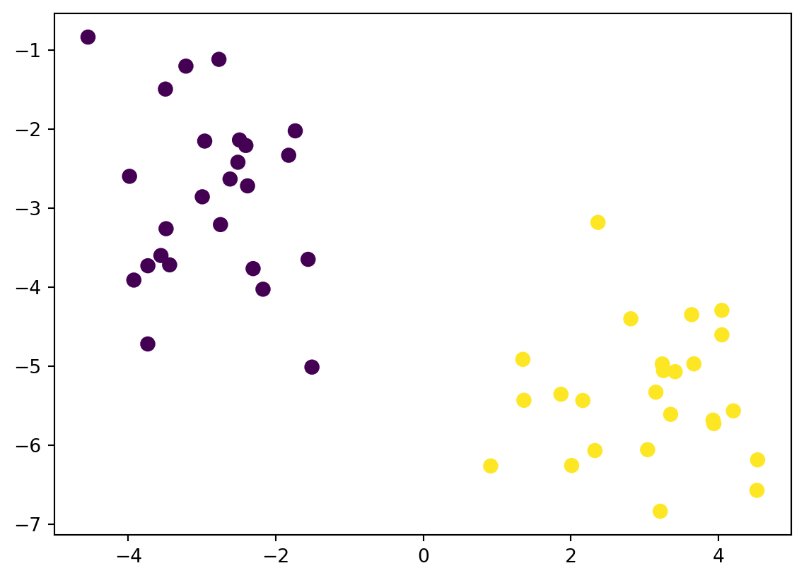
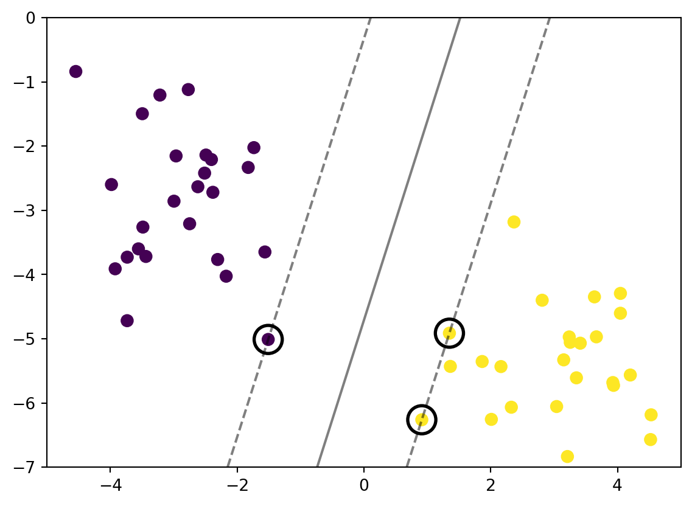
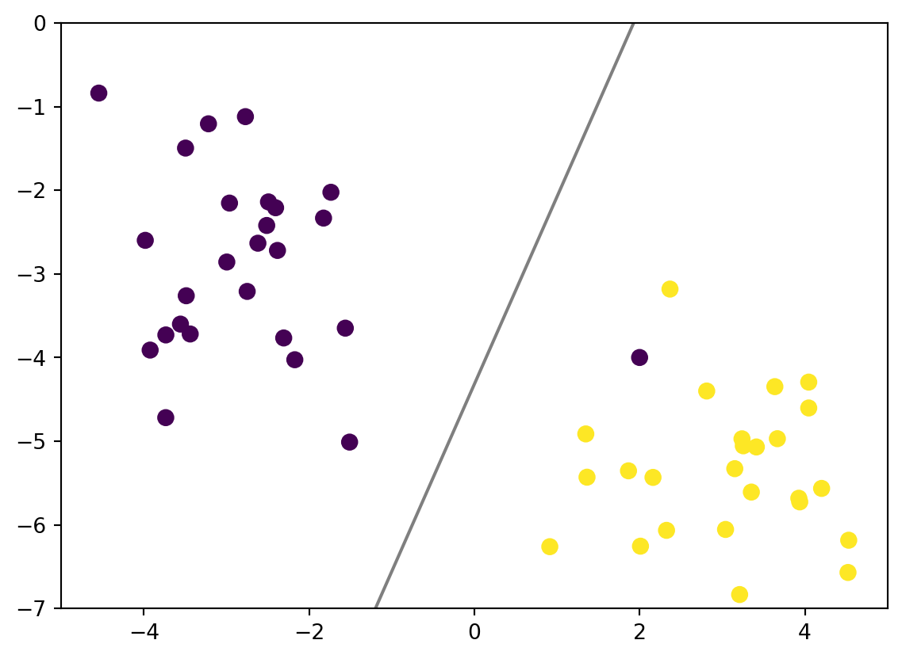
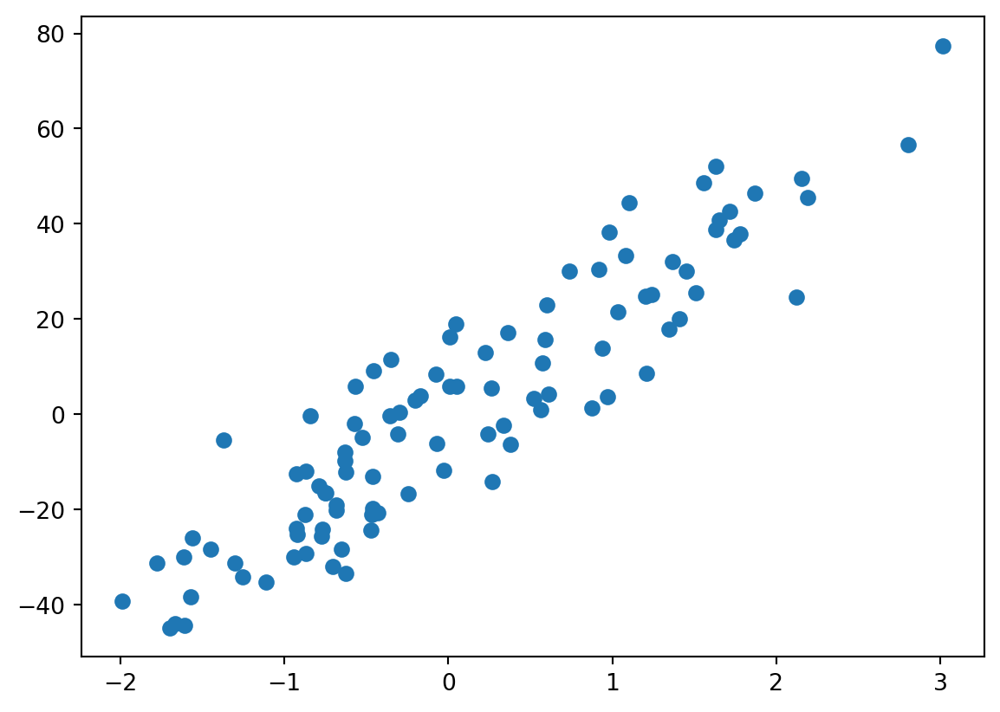
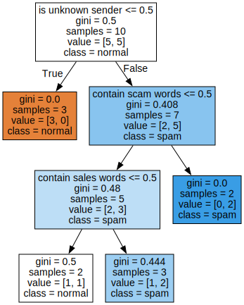
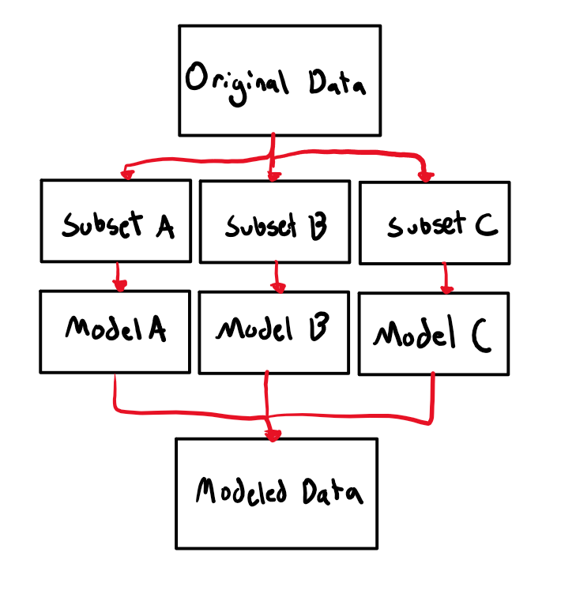
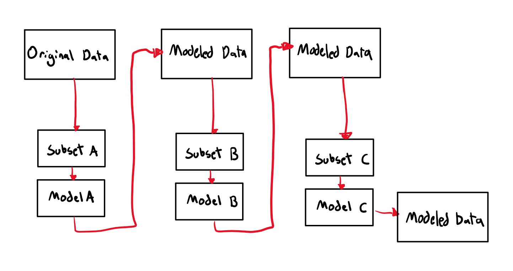

Supervised learning uses labeled datasets to train algorithms that to classify data or predict outcomes accurately. As input data is fed into the model, it adjusts its weights until the model has been fitted appropriately, which occurs as part of the cross validation process.
In contrast, unsupervised learning uses unlabeled data to discover patterns that help solve for clustering or association problems. This is particularly useful when subject matter experts are unsure of common properties within a data set.
10.2 Classification vs Regression
Classificaiton: outcome variable is categorical
Regression: outcome variable is continuous
Both problems can have many covariates (predictors/features)
Four rates from the confusion matrix with actual (row) margins:
TPR: TP / (TP + FN). Also known as sensitivity.
FNR: TN / (TP + FN). Also known as miss rate.
FPR: FP / (FP + TN). Also known as false alarm, fall-out.
TNR: TN / (FP + TN). Also known as specificity.
Note that TPR and FPR do not add up to one. Neither do FNR and FPR.
Four rates from the confusion matrix with predicted (column) margins:
PPV: TP / (TP + FP). Also known as precision.
FDR: FP / (TP + FP).
FOR: FN / (FN + TN).
NPV: TN / (FN + TN).
10.2.2.2 Measure of classification performance
Measures for a given confusion matrix:
Accuracy: (TP + TN) / (P + N). The proportion of all corrected predictions. Not good for highly imbalanced data.
Recall (sensitivity/TPR): TP / (TP + FN). Intuitively, the ability of the classifier to find all the positive samples.
Precision: TP / (TP + FP). Intuitively, the ability of the classifier not to label as positive a sample that is negative.
F-beta score: Harmonic mean of precision and recall with \(\beta\) chosen such that recall is considered \(\beta\) times as important as precision, \[
(1 + \beta^2) \frac{\text{precision} \cdot \text{recall}}
{\beta^2 \text{precision} + \text{recall}}
\] See stackexchange post for the motivation of \(\beta^2\).
When classification is obtained by dichotomizing a continuous score, the receiver operating characteristic (ROC) curve gives a graphical summary of the FPR and TPR for all thresholds. The ROC curve plots the TPR against the FPR at all thresholds.
Increasing from \((0, 0)\) to \((1, 1)\).
Best classification passes \((0, 1)\).
Classification by random guess gives the 45-degree line.
Area between the ROC and the 45-degree line is the Gini coefficient, a measure of inequality.
Area under the curve (AUC) of ROC thus provides an important metric of classification results.
10.2.3 Cross-validation
Goal: strike a bias-variance tradeoff.
K-fold: hold out each fold as testing data.
Scores: minimized to train a model
Cross-validation is an important measure to prevent over-fitting. Good in-sample performance does not necessarily mean good out-sample performance. A general work flow in model selection with cross-validation is as follows.
Split the data into training and testing
For each candidate model \(m\) (with possibly multiple tuning parameters)
Fit the model to the training data
Obtain the performance measure \(f(m)\) on the testing data (e.g., CV score, MSE, loss, etc.)
Choose the model \(m^* = \arg\max_m f(m)\).
10.3 Support Vector Machines
10.3.1 Introduction
Support Vector Machine (SVM) is a type of suppervised learning models that can be used to analyze classification and regression. In this section will develop the intuition behind support vector machines and provide some examples.
10.3.2 Package that need to install
Before we begin ensure that these this package are installed in your python
pip install scikit-learn
Scikit-learn is a python package that provides efficient versions of a large number of common algorithms It constist of all type of machine learning model which is wildly known such as:
Linear Regression
Logistic Regression
Decision Trees
Gaussian Process
Furthermore, it also provide function that can be used anytime and use it on the provided machine learning algorithm. There are two type of functions:
Avalable dataset functions such as Iris dataset load_iris
Randomly generated datasets function such as make_moon , make_circle etc.
10.3.3 Support Vector Classifier
Before we get into SVM , let us take a look at this simple classification problem. Consider a distinguishable datasets
%matplotlib inlineimport numpy as npimport matplotlib.pyplot as pltseed =220from sklearn.datasets import make_blobsX, y = make_blobs(n_samples=50, centers=2, random_state= seed, cluster_std=1)plt.scatter(X[:, 0], X[:, 1], c=y, s=50);

One of the solution we can do is to draw lines as a way to seperate these two classes.
How do we find the best line that divide them both? In other word we need to find the optimal line or best decision boundary.
Lets import Support Vector Machine module for now to help us find the best line to classify the data set.
from sklearn.svm import SVC # "Support vector classifier"model = SVC(kernel='linear', C=1E10)# For now lets not think about the purpose of Cmodel.fit(X, y)ax = plt.gca()ax.set_xlim(-5, 5)ax.set_ylim(-7, 0)xlim = ax.get_xlim()ylim = ax.get_ylim()# Create a mesh gridx_grid = np.linspace(xlim[0], xlim[1], 30)y_grid = np.linspace(ylim[0], ylim[1], 30)Y_mesh, X_mesh = np.meshgrid(y_grid,x_grid)xy = np.vstack([X_mesh.ravel(),Y_mesh.ravel()]).TP = model.decision_function(xy).reshape(X_mesh.shape)ax.contour(X_mesh, Y_mesh, P, colors='k', levels=[-1, 0 ,1], alpha=0.5, linestyles= ['--','-','--']);ax.scatter(X[:, 0], X[:, 1], c=y, s=50);ax.scatter(model.support_vectors_[:, 0], model.support_vectors_[:, 1], s=300, linewidth=2, facecolor ='none', edgecolor ='black');

There is a name for this line. Is called margin, it is the shortest distance between the selected observation and the line. In this case we are using the largest margin to seperate the observation. We called it Maximal Margin Classifier.
The selected observation (circled points) are called Support Vectors. For simple explaination, it is the points that used to create the margin.
What if we have a weird observation as shown below? What happend if we try to use Maximal Margin Classifier? Lets add a point on an interesting location.
# Addiing a point near yellow side and name it bluefrom sklearn.datasets import make_blobsX, y = make_blobs(n_samples=50, centers=2, random_state=220, cluster_std=1)X_new = [2, -4]X = np.vstack([X,X_new])y_new = np.array([1]).reshape(1)y = np.append(y, [0], axis=0)ax = plt.subplot()ax.scatter(X[:, 0], X[:, 1], c=y, s=51);
As you can see Maximal Margin Classifier might not be a useful in this case. We must make the margin that is not sensitve to outliers and allow a few misclassifications. So we need to implement Soft Margin to get a better prediction. This is where parameter C comes in.
# New fit with modifiying the Cmodel = SVC(kernel='linear', C=0.1)model.fit(X, y)ax = plt.gca()ax.set_xlim(-5, 5)ax.set_ylim(-7, 0)xlim = ax.get_xlim()ylim = ax.get_ylim()# Create a mesh gridx_grid = np.linspace(xlim[0], xlim[1], 30)y_grid = np.linspace(ylim[0], ylim[1], 30)Y_mesh, X_mesh = np.meshgrid(y_grid,x_grid)xy = np.vstack([X_mesh.ravel(),Y_mesh.ravel()]).TP = model.decision_function(xy).reshape(X_mesh.shape)ax.contour(X_mesh, Y_mesh, P, colors='k', levels=0, alpha=0.5, linestyles='-');ax.scatter(X[:, 0], X[:, 1], c=y, s=50);

Increasing the parameter C will greatly influence the classification line location
This is not a good classifier. We need a way to make it better. Instead of just using the available data, let us try to convert a data to a better dimension space.
r = np.exp(-(X **2).sum(1))
In this case we will implement a kernel that will translate our data to a new diemension. This is one of the way to fit a nonlinear relationship with a linear classifier.
As for summary, Support Vector Machine follow these steps:
Start with a data in low dimension.
Use kernel to move the data to a higher dimension.
Find a Support Vector Classifier that seperate the data into two groups.
10.3.3.2 Kernel
Let talk more about the kernel. There are mutiple type of kernel. We will go through a few of them. Generaly, they call as a kernel trick or kernel method or kernel function. For simple explanation, these kernel can be view as a method on how we transform the data points into. It may need to transform to a higher dimension it may not.
Linear Kernel The linear kernel is a kernel that uses the dot product of the input vectors to measure their similarity: \[k(x,x')= (x\cdot x')\]
Polynomial Kernel
For homogeneous case: \[k(x,x')= (x\cdot x')^d\] where if \(d = 1\) it wil be act as linear kernel.
For inhomogeneous case: \[k(x,x')= (x\cdot x' + r )^d\] where r is a coefficient.
Radial Basis Function Kernel (or rbf) is a well know kernel that can transform the data to a infinite dimension space.
\(\gamma >0\). Sometimes parametrized using \(\gamma = \frac{1}{2\sigma^2}\)
10.3.3.3 Regression Problem
We will talk a little on Regression Problem and how it works on Support Vector Machine.
Lets consider a data output as shown below.
from sklearn.datasets import make_regressionimport matplotlib.pyplot as pltX, y = make_regression(n_samples=100, n_features=1, noise=10, random_state =2220)plt.scatter(X, y, marker='o')plt.show()

So how Support Vector Machine works for regression problem? Instead of giving some math formulas. Let do a fit and show the output of the graph.
As you can see for regression problem Support Vector Machine for Regression or SVR create a two black lines as the decision boundary and the red line as the hyperplane. Our objective is to ensure points are within the boundary. The best fit line is the hyperplane that has a maximum number of points.
You can control the model by adjust the C value and epsilon value. C value change the slope of the line, lower the value will reduce the slope of the fit line. epsilon change the distance of the decision boundary, lower the epsilon reduce the distance of the dicision boundary.
10.3.3.4 Example: Classification
Let take a look at our NYC database. We would like to create a machine learning model with SVM.
import pandas as pdjan23 = pd.read_csv("data/nyc_crashes_202301_cleaned.csv")jan23.head()
CRASH DATE
CRASH TIME
BOROUGH
ZIP CODE
LATITUDE
LONGITUDE
LOCATION
ON STREET NAME
CROSS STREET NAME
OFF STREET NAME
...
Unnamed: 30
Unnamed: 31
Unnamed: 32
Unnamed: 33
Unnamed: 34
Unnamed: 35
Unnamed: 36
Unnamed: 37
Unnamed: 38
Unnamed: 39
0
1/1/23
14:38
BROOKLYN
11211.0
40.719094
-73.946108
(40.7190938,-73.9461082)
BROOKLYN QUEENS EXPRESSWAY RAMP
NaN
NaN
...
NaN
NaN
NaN
NaN
NaN
NaN
NaN
NaN
NaN
NaN
1
1/1/23
8:04
QUEENS
11430.0
40.659508
-73.773687
(40.6595077,-73.7736867)
NASSAU EXPRESSWAY
NaN
NaN
...
NaN
NaN
NaN
NaN
NaN
NaN
NaN
NaN
NaN
NaN
2
1/1/23
18:05
MANHATTAN
10011.0
40.742454
-74.008686
(40.7424543,-74.008686)
10 AVENUE
11 AVENUE
NaN
...
NaN
NaN
NaN
NaN
NaN
NaN
NaN
NaN
NaN
NaN
3
1/1/23
23:45
QUEENS
11103.0
40.769737
-73.912440
(40.769737, -73.91244)
ASTORIA BOULEVARD
37 STREET
NaN
...
NaN
NaN
NaN
NaN
NaN
NaN
NaN
NaN
NaN
NaN
4
1/1/23
4:50
BRONX
10462.0
40.830555
-73.850720
(40.830555, -73.85072)
CASTLE HILL AVENUE
EAST 177 STREET
NaN
...
NaN
NaN
NaN
NaN
NaN
NaN
NaN
NaN
NaN
NaN
5 rows × 40 columns
Let us merge with uszipcode database to increase the number of input value to predict injury.
#Calculate the sumjan23['sum'] = jan23['NUMBER OF PERSONS INJURED'] + jan23['NUMBER OF PEDESTRIANS INJURED']+ jan23['NUMBER OF CYCLIST INJURED'] + jan23['NUMBER OF MOTORIST INJURED']for index in jan23.index:if jan23['sum'][index] >0: jan23.loc[index,['injured']] =1else: jan23.loc[index,['injured']] =0from uszipcode import SearchEnginesearch = SearchEngine()resultlist = []for index in jan23.index: checkZip = jan23['ZIP CODE'][index]if np.isnan(checkZip) ==False: zipcode =int(checkZip) result = search.by_zipcode(zipcode) resultlist.append(result.to_dict())else: resultlist.append({})Zipcode_data = pd.DataFrame.from_records(resultlist)merge = pd.concat([jan23, Zipcode_data], axis=1)# Drop the repeated zipcodemerge = merge.drop(['zipcode','lat','lng'],axis =1)merge = merge[merge['population'].notnull()]Focus_data = merge[['radius_in_miles', 'population', 'population_density','land_area_in_sqmi', 'water_area_in_sqmi', 'housing_units','occupied_housing_units','median_home_value','median_household_income','injured']]
These are the focus data that we will apply SVM to.
Focus_data.head()
radius_in_miles
population
population_density
land_area_in_sqmi
water_area_in_sqmi
housing_units
occupied_housing_units
median_home_value
median_household_income
injured
0
2.000000
90117.0
39209.0
2.30
0.07
37180.0
33489.0
655500.0
46848.0
1.0
2
0.909091
50984.0
77436.0
0.66
0.00
33252.0
30294.0
914500.0
104238.0
0.0
3
0.852273
38780.0
54537.0
0.71
0.00
18518.0
16890.0
648900.0
55129.0
1.0
4
1.000000
75784.0
51207.0
1.48
0.00
31331.0
29855.0
271300.0
45864.0
0.0
5
2.000000
80018.0
36934.0
2.17
0.05
34885.0
30601.0
524100.0
51725.0
0.0
To reduce the complexity, we will get 1000 sample from the dataset and import train_test_split to split up our data to measure the performance.
random_sample = Focus_data.sample(n=1000, random_state=220)#Create X inputX = random_sample[['radius_in_miles', 'population', 'population_density','land_area_in_sqmi', 'water_area_in_sqmi', 'housing_units','occupied_housing_units','median_home_value','median_household_income']].values#Create Y for outputy = random_sample['injured'].valuesfrom sklearn.model_selection import train_test_split X_train, X_test, y_train, y_test = train_test_split(X, y, test_size =0.20)
Apply SVM to our dataset and make a prediction on X_test
from sklearn.svm import SVC clf = SVC(kernel='rbf').fit(X_train, y_train)#Make prediction using X_testy_pred = clf.predict(X_test)
Check our accuracy of our model by importing accuracy_score from sklearn.metrics
from sklearn.metrics import accuracy_scoreaccuracy = accuracy_score(y_test, y_pred)accuracy
0.69
10.3.4 Conclusion
Support Vector Machines is one of the powerful tool mainly for classifications.
Their dependence on relatively few support vectors means that they are very compact models, and take up very little memory.
Once the model is trained, the prediction phase is very fast.
Because they are affected only by points near the margin, they work well with high-dimensional data—even data with more dimensions than samples, which is a challenging regime for other algorithms.
Their integration with kernel methods makes them very versatile, able to adapt to many types of data.
However, SVMs have several disadvantages as well:
The scaling with the number of samples \(N\) is \(O[N^3]\) at worst, or \(O[N^2]\) for efficient implementations. For large numbers of training samples, this computational cost can be prohibitive.
The results are strongly dependent on a suitable choice for the softening parameter \(C\).This must be carefully chosen via cross-validation, which can be expensive as datasets grow in size.
The results do not have a direct probabilistic interpretation. This can be estimated via an internal cross-validation (see the probability parameter of SVC), but this extra estimation is costly.
Decision Trees (DTs) are a non-parametric supervised learning method used for classification and regression. The goal is to create a model that predicts the value of a target variable by learning simple decision rules inferred from the data features. A tree can be seen as a piecewise constant approximation.
For instance, in the example below, decision trees learn from data to approximate a sine curve with a set of if-then-else decision rules. The deeper the tree, the more complex the decision rules and the fitter the model.
Both root and internal nodes have child nodes that branch out from them based on the value of a feature. For instance, the root node splits the unknown_sender feature space, and the threshold is 0.5. Its left subtree represents all the data with unknown_sender <= 0.5, whereas its right subtree represents all the subset of data with unknown_sender > 0.5. Each leaf node has an predicted value which will be used as the output from the decision tree. For example, the leftmost leaf node (left child of the root node) will lead to output is_spam = 0 (i.e. “normal”).
We can use this model to make some prediction.
new_email_feat = [[0, 1, 0], # Known sender, contains sales word, no scam word [1, 1, 0]] # Unknown sender, contains sales word, no scam wordclf.predict(new_email_feat) # expected result: 0 (normal), 1 (spam)
array([0, 1])
Given an input, the predicted outcome is obtained by traversing the decision tree. The traversal starts from the root node, and chooses left or right subtree based on the node’s splitting rule recursively, until it reaches a leaf node.
For the example input [1, 1, 0], its unknown_sender feature is 1, so we follow the right subtree based on the root node’s splitting rule. The next node splits on the scam_words feature, and since its value is 0, we follow the left subtree. The next node uses the sales_words feature, and its value is 1, so we should go down to the right subtree, where we reach a leaf node. Thus the predicted outcome is the value 1 (class “spam”).
10.4.2 Tree algorithms
As many other supervised learning approaches, the decision trees are constructed in a way that minimizes a chosen cost function. It is computationally infeasible to find the optimal decision tree that minimizes the cost function. Thus, a greedy approach known as recursive binary splitting is often used.
Package scikit-learn uses an optimized version of the CART algorithm; however, the scikit-learn implementation does not support categorical variables for now. Minimal cost-complexity pruning is an algorithm used to prune a tree to avoid over-fitting.
10.4.2.1 Cost function
Gini and entropy are classification criteria. Mean Squared Error (MSE or L2 error), Poisson deviance and Mean Absolute Error (MAE or L1 error) are Regression criteria. Here shows the mathematical formulations to get gini and entropy.
As we see from the above example, in a decision tree, each tree node \(m\) is associated with a subset of the training data set. Assume there are \(n_m\) data points associated with \(m\), and the class values of the data points are in the set \(Q_m\).
Further assume that there are K classes, and let \[
p_{mk}=\frac{1}{n_m}\sum_{y\in Q_m}I(y=k) (k=1,...,K)
\] represent the proportion of class \(k\) observations in node \(m\). Then the cost functions (referred to as classification criteria in sklearn) available in sklearn are: * Gini: \[
H(Q_m)=\sum_{k}p_{mk}(1-p_{mk})
\] * Log loss or entropy: \[
H(Q_m)=-\sum_{k}p_{mk}log(p_{mk})
\]
In sklearn.tree.DecisionTreeClassifierhe, the default criterion is gini. One advantage of using Gini impurity over entropy is that it can be faster to compute, since it involves only a simple sum of squares rather than logarithmic functions. Additionally, Gini impurity tends to be more robust to small changes in the data, while entropy can be sensitive to noise.
10.4.2.2 How to choose what feature and threshold to split on at each node?
The decision tree algorithm iterates over all possible features and thresholds and chooses the one that maximize purity or minimize impurity or maximize information gain.
Let’s use the spam email example to calulate the impurity reduction.
The impurity reduction based on Gini is calculated as the difference between the Gini index of the parent node and the weighted average of the Gini of the child nodes. The split that results in the highest impurity reduction based on Gini is chosen as the best split.
clf_graph

10.4.2.3 When to stop splitting?
There are several stopping criteria that can be used to decide when to stop splitting in a decision tree algorithm. Here are some common ones:
When a node is 100% one class
Maximum depth: Stop splitting when the tree reaches a maximum depth, i.e., when the number of levels in the tree exceeds a predefined threshold.
Minimum number of samples: Stop splitting when the number of samples in a node falls below a certain threshold. This can help avoid overfitting by preventing the tree from making very specific rules for very few samples.
Minimum decrease in impurity: Stop splitting when the impurity measure (e.g., Gini impurity or entropy) does not decrease by a certain threshold after a split. This can help avoid overfitting by preventing the tree from making splits that do not significantly improve the purity of the resulting child nodes.
Maximum number of leaf nodes: Stop splitting when the number of leaf nodes reaches a predefined maximum.
from sklearn import treeimport pandas as pdimport numpy as np
10.4.3.1.3 Step 3: Preparing the Data
NYC = pd.read_csv("data/merged.csv")
# drop rows with missing data in some columnsNYC = NYC.dropna(subset=['BOROUGH', 'hour', 'median_home_value', 'occupied_housing_units'])# Select the featuresnyc_subset = NYC[['BOROUGH', 'hour', 'median_home_value', 'occupied_housing_units']].copy()
# One hot encode categorical featuresnyc_encoded = pd.get_dummies(nyc_subset, columns=['BOROUGH', 'hour'])nyc_encoded
# Fit the model and plot the tree (using default parameters)injury_clf = tree.DecisionTreeClassifier( criterion='gini', splitter='best', max_depth=None, min_samples_split=2, min_samples_leaf=1, min_weight_fraction_leaf=0.0, max_features=None, max_leaf_nodes=None, min_impurity_decrease=0.0, class_weight=None, ccp_alpha=0.0)injury_clf = injury_clf.fit(X_train, y_train)
injury_clf.tree_.node_count
3599
Arguments related to stopping criteria: * max_depth * min_samples_split * min_samples_leaf * min_weight_fraction_leaf * max_features * max_leaf_nodes * min_impurity_decrease
Other important arguments: * criterion: cost function to use * splitter: node splitting strategy * ccp_alpha: pruning parameter
from sklearn.model_selection import GridSearchCV# define the hyperparameter grid for logistic regressionparam_grid = {'criterion': ['gini', 'entropy'],'max_depth': [10, 15, 20],'min_impurity_decrease': [1e-4, 1e-3, 1e-2],'ccp_alpha': [0.0, 1e-5, 1e-4, 1e-3]}# perform cross-validation with GridSearchCVtree_clf = tree.DecisionTreeClassifier()grid_search = GridSearchCV(tree_clf, param_grid, cv=5, scoring='f1')# fit the GridSearchCV object to the training datagrid_search.fit(X_train, y_train)# print the best hyperparameters foundgrid_search.best_params_
In conclusion, decision trees are a widely used supervised learning algorithm for classification and regression tasks. They are easy to understand and interpret. The algorithm works by recursively splitting the dataset based on the attribute that provides the most information gain or the impurity reduction. The tree structure is built from the root node to the leaf nodes, where each node represents a decision based on a feature of the data.
One advantage of decision trees is their interpretability, which allows us to easily understand the decision-making process. They can also model complex problems with multiple outcomes. They are not affected by missing values or outliers.
However, decision trees can be prone to overfitting and may not perform well on complex datasets. They can also be sensitive to small variations in the training data and may require pruning to prevent overfitting. Random forest would be a better choice in this situation. Furthermore, decision trees may not perform well on imbalanced datasets, and their performance can be affected by the selection of splitting criteria.
Overall, decision trees are a useful and versatile tool in machine learning, but it is important to carefully consider their advantages and disadvantages before applying them to a specific problem.
Random forest (RF) is a commonly-used ensemble machine learning algorithm. It is a bagging, also known as bootstrap aggregation, method, which combines the output of multiple decision trees to reach a single result.
Regression: mean
Classification: majority vote
10.5.1 Algorithm
RF baggs on both data (rows) and features (columns).
A random sample of the training data in a training set is selected with replacement (bootstrap)
A random subset of the features is selected as features (which ensures low correlation among the decision trees)
Hyperparameters
node size
number of trees
number of features
Use cross-valudation to select the hyperparameters.
Advantages:
Reduced risk of overfitting since averaging of uncorrelated trees lowers overall variance and prediction error.
Provides flexibility in handeling missing data.
Easy to evaluate feature importance
Mean decrease in impurity (MDI): when a feature is excluded
Mean decrease accuracy: when the values of a feature is randomly permuted
Disadvantages:
Computing intensive
Resource hungery
Interpretation
10.6 Bagging vs. Boosting
By Nathan Nhan
10.6.1 Introduction
Before we talk about Bagging and Boosting we first must talk about ensemble learning. Ensemble learning is a technique used in machine-learning where we have multiple models (often times called “weak learners”) that are trained to solve the same problem and then combined to obtain better results that they could individually. With this, we can obtain more accurate and more robust models for our data using this technique.
Bagging and boosting are two types of ensemble learning techniques. They decrease the variance of a single estimate as they combine multiple estimates from different models to create a model with higher stability. Additionally, ensemble learning techniques increase the stability of the final model by reducing faactors of error in our models such as unnecessary noise, bias, and variance that we might find hurts the accuracy of our model. Specifically:
Bagging helps decrease the model’s variance and prevent over-fitting.
Boosting helps decrease the model’s bias.
10.6.2 Bagging
Bagging, which stands for bootrap aggregation, is a ensemble learning algorithm designed to improve the stability and accuracy of algorithms used in statistical classification and regression. In Bagging, multiple homogenous algorithms are trained independently and combined afterward to determine the model’s average. It works like this:
From the original dataset, multiple subsets are created, selecting observations with replacement.
On each of these subsets, a base learner (weak learner) is created for each
Next, all the independent models are run in parallel with one another
The final predictions are determined by combining the predictions from all the models.

Visualization on how the bagging algorithm works
The benefits of using bagging algorithms are that * Bagging algorithms reduce bias and variance errors. * Bagging algorithms can handle overfitting (when a model works with a training dataset but fails with the actual testing dataset). * Bagging can easily be implemented and produce more robust models.
10.6.2.1 Illustration
First we must load the dataset. For this topic I will be generating a madeup dataset shown below. It is recommended to make sure the dataset has no missing values as datasets with missing values leads to inconsistent results and poor model performance.
import pandas as pdimport numpy as npimport randomlength =1000random.seed(0)# Generate a random datasetdata = {'Age': [random.randint(10, 80) for x inrange(length)],'Weight': [random.randint(110, 250) for x inrange(length)],'Height': [random.randint(55, 77) for x inrange(length)],'Average BPM': [random.randint(70, 100) for x inrange(length)],'Amount of Surgeries': [random.randint(0, 3) for x inrange(length)],'Blood Pressure': [random.randint(100, 180) for x inrange(length)], }data['Healthy?'] = np.nandf = pd.DataFrame(data)# Generate a random response variable displaying "1" for healthy and "0" for unhealthyfor index, row in df.iterrows():if row['Blood Pressure'] <110and row['Average BPM'] >80: df.at[index, 'Healthy?'] = random.choice([0, 1, 1, 1, 0, 0, 0])else: df.at[index, 'Healthy?'] = random.choice([1, 1, 1, 1, 0, 1, 1, 1, 1, 1, 1])df
Age
Weight
Height
Average BPM
Amount of Surgeries
Blood Pressure
Healthy?
0
59
125
61
92
1
177
1.0
1
63
198
71
72
0
149
1.0
2
15
218
72
74
0
117
1.0
3
43
144
66
96
3
132
1.0
4
75
165
69
84
3
173
1.0
...
...
...
...
...
...
...
...
995
15
113
73
74
2
147
1.0
996
11
184
63
74
3
102
1.0
997
38
139
73
72
1
110
1.0
998
51
152
68
99
0
159
1.0
999
18
180
56
80
1
162
1.0
1000 rows × 7 columns
Next, we need to specify the x and y variables where the x-variable will hold all the input columns containing numbers and y-variable will contain the output column.
X = df.drop(["Healthy?"], axis="columns")y = df['Healthy?']print(X)
Next we must scale our data. Dataset scaling is transforming the dataset to fit within a specific range. This ensures that no data point is left out during model training. In the example giving we will use the StandardScaler method to scale our dataset.
from sklearn.preprocessing import StandardScalerscaler = StandardScaler()X_scaled = scaler.fit_transform(X)print(X)print(X_scaled)
After scaling the dataset, we can split it. We will split the scaled dataset into two subsets: training and testing. To split the dataset, we will use the train_test_split method. We will be using the default splitting ratio for the train_test_split method which means that 80% of the data will be the training set and 20% the testing set.
from sklearn.model_selection import train_test_splitX_train, X_test, y_train, y_test = train_test_split(X_scaled, y, stratify=y, random_state=0)
Now that we have split our data, we can now perform our classification. The BaggingClassifier classifier will perform all the bagging steps and build an optimized model based on our data. The BaggingClassifier will fit the weak/base learners on the randomly sampled subsets. The listed parameters are as follows:
estimator - this parameter takes the algoithm we want to use, in this example we use the DecisionTreeClassifier for our weak learners.
n_estimators - this parameter takes the amount of weak learners we want to use.
max_samples - this parameter represents The maximum number of data that is sampled from the training set. We use 80% of the training dataset for resampling.
bootstrap - this parameter allows for resampling of the training dataset without replacement when set to True.
oob_score - this parameter is used to compute the model’s accuracy score after training.
random_state - Seed used by the random number generator so we can reproduce out results
from sklearn.ensemble import BaggingClassifierfrom sklearn.tree import DecisionTreeClassifierbag_model = BaggingClassifier(estimator=DecisionTreeClassifier(), # DecisionTreeClassifier() if estimator is not definedn_estimators=100, bootstrap=True,oob_score=True,random_state =0)bag_model.fit(X_train, y_train)AccScore = bag_model.oob_score_print("Accuracy Score for Bagging Classifier: "+str(AccScore))
Accuracy Score for Bagging Classifier: 0.8853333333333333
We can find if overfitting occurs when we get a lower accuracy when using the testing dataset. We can find this by running the following code:
if bag_model.score(X_test, y_test) < AccScore:print('Overfitting has occurred since the testing dataset has a lower accuracy than the training dataset')else:print("No overfitting has occurred")
Overfitting has occurred since the testing dataset has a lower accuracy than the training dataset
Comparing this to the non-bagging algorithm like K-fold cross-validation:
from sklearn.model_selection import cross_val_scorescores = cross_val_score(DecisionTreeClassifier(), X, y, cv=5)print("Accuracy Score for Bagging Classifier: "+str(scores.mean()))
Accuracy Score for Bagging Classifier: 0.78
10.6.2.2 Example: Random Forest Classifier
The Random Forest Classifier algorithm is a typical example of a bagging algorithm. Random Forests uses bagging underneath to sample the dataset with replacement randomly. Random Forests samples not only data rows but also columns. It also follows the bagging steps to produce an aggregated final model.
from sklearn.ensemble import RandomForestClassifierclf = RandomForestClassifier(n_estimators=100, bootstrap =True,oob_score=True,random_state =0)clf = clf.fit(X, y)print("Accuracy Score for Random Forest Regression Algoritm Classifier: "+str(clf.oob_score_))
Accuracy Score for Random Forest Regression Algoritm Classifier: 0.869
10.6.3 Boosting
The Boosting algorithm is a type of ensemble learning algorithm that works by training weak models sequentially. First, a model is built from the training data. Then an additional model is built which tries to correct the errors present in the first model. When an input is misclassified by a model, its weight is increased so that next model is more likely to classify it correctly. This procedure is continued and models are added until either the complete training data set is predicted correctly or the maximum number of n models are added.
It works step-by-step like this:
A subset is created from the original dataset, where initially all the data points are given equal weights.
A base model is created on this subset which is used to make predictions on the whole dataset.
Errors are calculated by comparing the actual values vs. the predicted values. The observations that are incorrectly predicted, are given higher weights.
An additional model is created and predictions are made on the dataset, trying to correct the errors of the previous model
The cycle will repeat until the maximum number of n models are added.
The final model (strong model) is the weighted mean of all the models (weak model).

Visualization on how the boosting algorithm works
10.6.3.1 Example: AdaBoost
The AdaBoost algorithm, which is short for “Adaptive Boosting,” was one of the first boosting methods that saw an increase in accuracy and speed performance of models. AdaBoost focuses on enhnacement in performance in areas where the first iteration of the model fails.
We can see an implmentation of this algorithm below:
The AdaBoostClassifier method has some of the following parameters:
estimator - this parameter takes the algoithm we want to use, in this example we use the DecisionTreeClassifier for our weak learners.
n_estimators - this parameter takes the amount of weak learners we want to use.
learning_rate - this parameter learning rate reduces the contribution of the classifier by this value. It has a default value of 1.
random_state - Seed used by the random number generator so we can reproduce out results.
XGBoost is widely considered as one of the most important boosting methods for its advantages over other boosting algorithms.
Other boosting algorithms typically use gradiant descent to find the minima of the n features mapped in n dimensional space. However, XGBoost instead uses the a mathematical technique called the Newton–Raphson method which uses the second derivative of the function which provides curvature information in contract to algorithms using gradiant descent which only use the first derivative.
XGBoost has its own python library called xgboost just to itself for which we wrote the example code below.
The XGBClassifer contains some of the following parameters:
learning_rate - this parameter takes the amount of weak learners we want to use.
random_state - Random number seed.
importance_type - The feature to focus on; either gain, weight, cover, total_gain or total_cover.
from xgboost import XGBClassifierxgboost = XGBClassifier( n_estimators =1000, learning_rate =0.05, random_state =0)xgboost.fit(X_train, y_train)score_xgb = xgboost.score(X_test,y_test)print("Accuracy Score for XGBoost Classifier: "+str(score_xgb))
Accuracy Score for XGBoost Classifier: 0.836
10.6.4 Comparison
Now with all that being said, which should you use? Bagging or Boosting?
Both Bagging and Boosting combine several estimates from different models so both will turn out a model with higher stability.
If you find that the problem when using a single model gets a high error, bagging will rarely be better but on the other hand boosting will generate a combined model with lower errors.
Conversely, if your single model is over-fitting then typically bagging is the best option and boosting will not help for over-fitting. Therefore, bagging iw what you want.
10.6.4.1 Similarites
Below is a set of similarites between Bagging and Boosting:
Both are ensemble learning methods to get N models all from one individual model
Both use random sampling to generate several random subsets
Both make the final decision by averaging and combining the N learners (or taking the majority of them i.e Majority Voting).
Both reduce variance and provide higher data stability than one individual model would.
10.6.4.2 Differences:
Below is a set of differences between Bagging and Boosting:
Bagging combines predictions belonging to the same type while boosting is a way of combining predictions that belong to different types
Bagging decreases variance while boosting decreases bias. If the classifier is unstable (high variance), then we using Bagging. If the classifier is stable and simple (high bias), then we should use Boosting.
Bagging each model receives equal weight where in Boosting each model is weighted based on their performance.
Bagging has models run in parallel, independent of one another while Boosting has them run sequentially so each model is dependent on the previous
In Bagging different training data subsets are randomly generated with replacement segemnts of the original training dataset. In Boosting each new subsets contains the elements that were misclassified by previous models.
Bagging attempts to solve over-fitting problem while Boosting does not.
10.6.4.3 Conclusion:
We have explained what an ensemble method is and how Bagging and Boosting algorithms function.
We have demonstrated the differences and similaries between the two ensemble methods: Bagging and Boosting.
We showed how to implement both Bagging and Boosting algorithms into Python